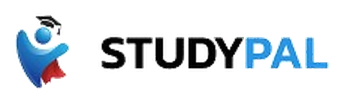
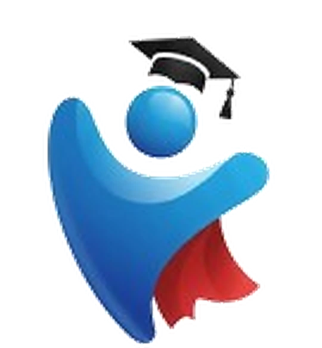
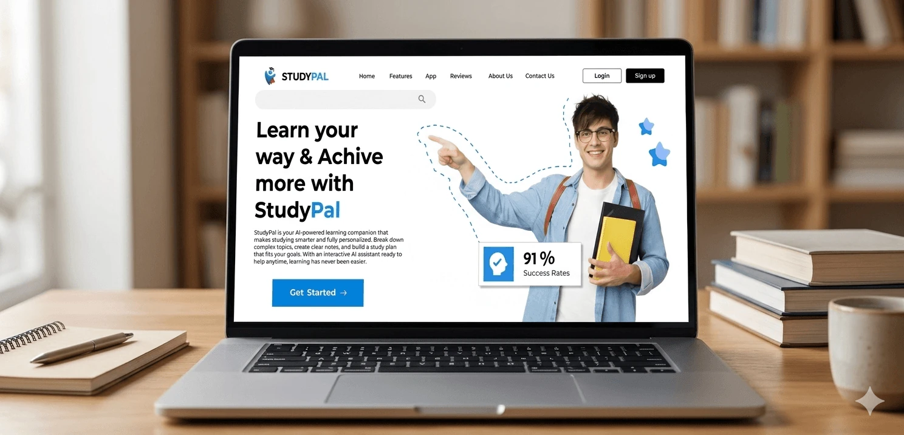
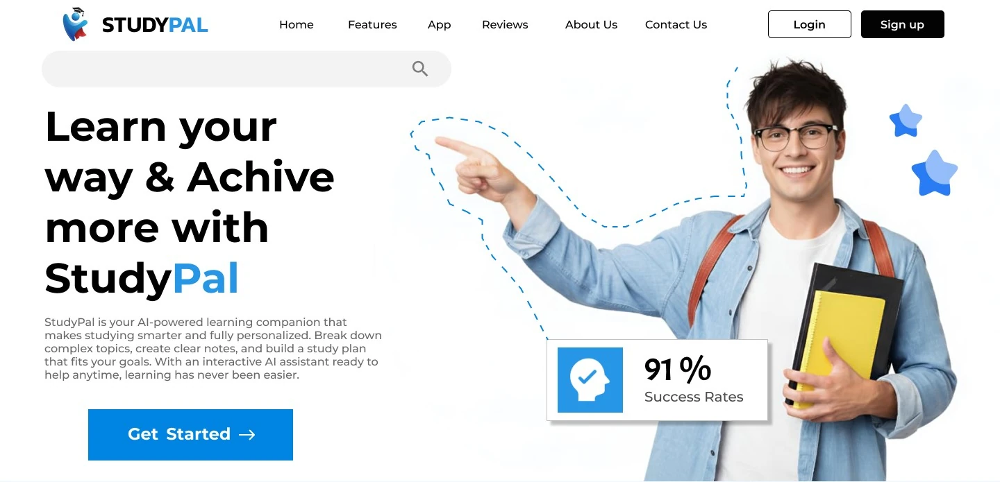
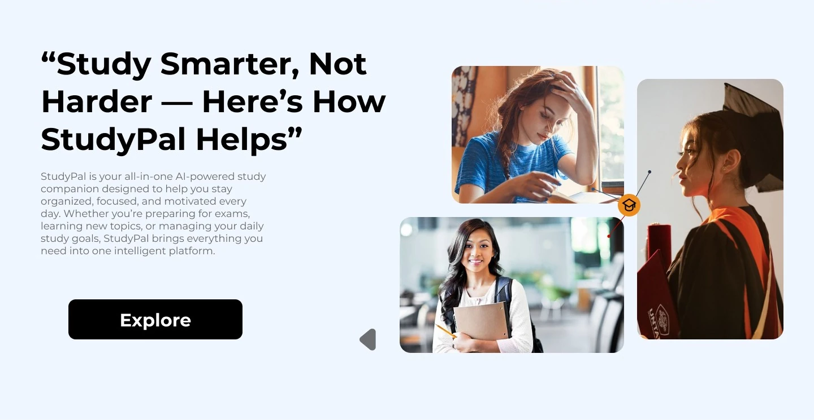
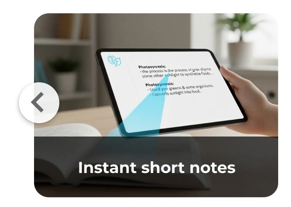
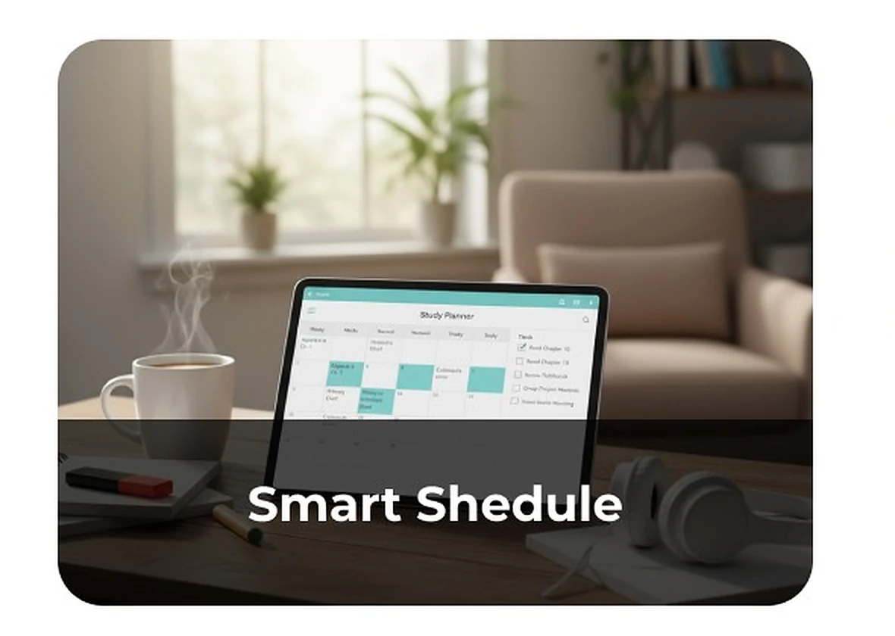
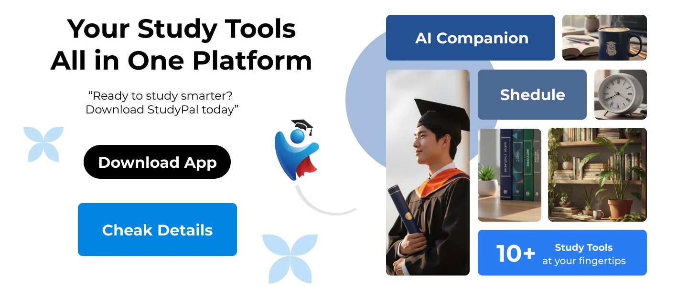

A question left unasked
Hesitation and limited time with teachers can make it harder to clear a doubt.
Make asking feel easier →
Concept case studyAn AI-powered learning companion concept that brings doubt help, study planning and learning resources into one place.

Stuck on a doubt?Let’s plan your week ✦Quick notes, ready.
Study Pal imagines a friendlier study system: somewhere to ask a question, make sense of a topic and keep a manageable plan. The existing website communicates that promise through a familiar student world and a small, supportive Pal.
Students are the primary audience. Teachers, parents and educational institutions are also named in the concept.
An existing desktop promotional website, its visual identity and the project framing already on the portfolio.
A concept story and visual showcase. It does not establish mobile screens, a validated app journey or product performance.
The portfolio frames the opportunity around confidence, attention and time. These are the design problems behind the concept, not findings from a documented study.
Class 10 / ICSE
The concept persona on the portfolio describes a determined student who wants to improve, but can feel overwhelmed by her study workload.
Existing concept persona. Not presented as an interview participant or validated research evidence.
Managing time, understanding complex topics and keeping track of subjects and deadlines.
Clear explanations, a realistic plan and a comfortable way to ask questions.
Personalised planning, video or animated explanations, reminders and easy rescheduling.
These are the learning priorities described in the portfolio. They are not an approved screen map or a tested sequence of interactions.
Friendly AI interaction and one-to-one doubt help.
Learning videos, animated explanations and short notes.
A personalised timetable that can be rescheduled.
Progress tracking and reminders to support consistency.
Blue gives the concept its focus. White space, soft grey surfaces, student photography and a playful mascot keep the presentation approachable.
Simple, bold typography for a student-friendly presentation.
Type named in the portfolioPoppins + Microsoft YaHei LightPalette shown is a presentation interpretation of the existing blue, white and soft-grey direction, not a recovered token specification.
The original hero pairs a bold learning promise with a student cut-out, bright blue call to action and the Pal wordmark. The page introduces the idea before explaining its study tools.

Original website hero, unchanged. The success-rate number is unverified promotional copy in the source artwork, not an outcome of this project.
Two existing sections move from a student-centred introduction to the features the concept wants to bring together.




Selected complete website details; partial carousel card omitted. Download copy and feature counts are concept artwork, not evidence of app availability or measured outcomes.
The current work gives Study Pal a recognisable identity and explains its learning promise. The next design step is to understand the study experience in detail before deciding what belongs on each app screen.
A concept for more supported learning.
Source: pranavportfolio001.framer.website/study-pal-page
Existing artwork and project framing from the portfolio. New editorial case-study presentation.